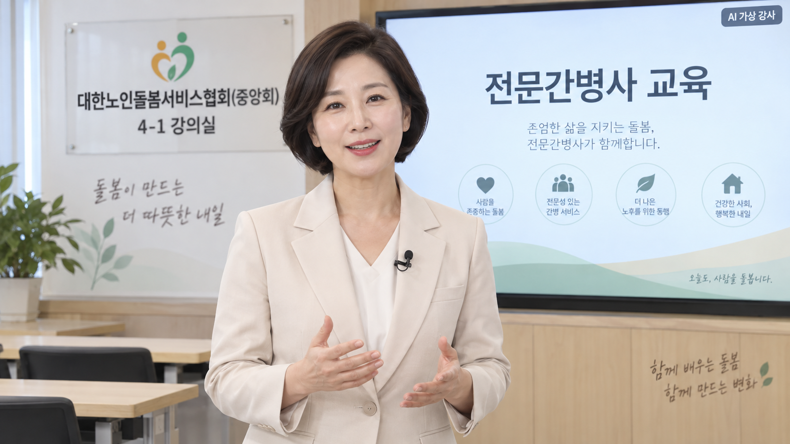

대한노인돌봄서비스협회(중앙회) · 발급기관 주식회사 한국치매케어센터 · 위탁교육 한국전문돌봄인력양성학원 · 위탁의뢰 중앙호스피스완화센터

현재 보이는 강사 이미지는 공통 시안입니다. 실존 간호사의 실제 강의 영상이 아니며, 영상 파일이 준비되면 이 영역에서 재생됩니다. 개인별 처방·기관 지침과 감독된 실습을 대신하지 않습니다.
강의 내용과 대본
약 3분 영상의 대본과 교육 안내입니다. 실제 영상 재생 시간은 영상 파일이 연결된 뒤 표시합니다.